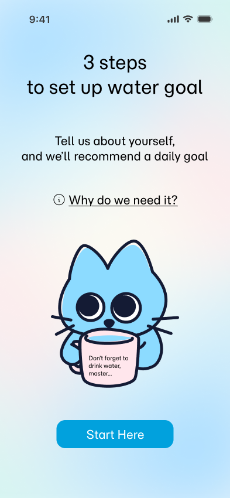
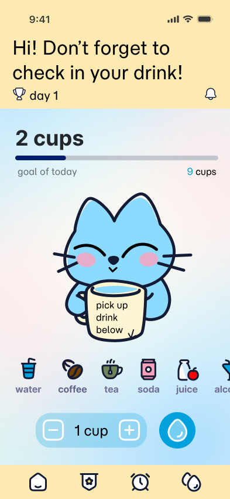
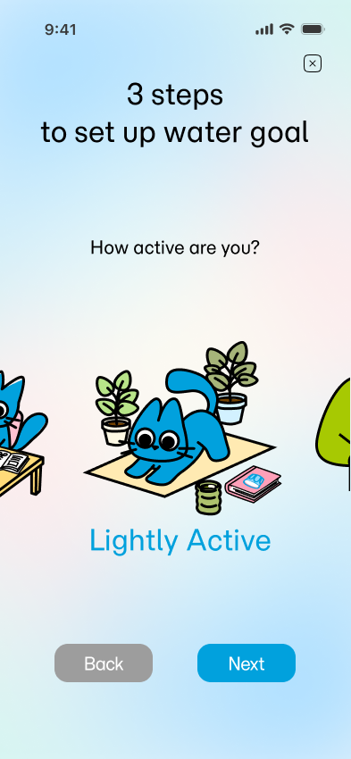
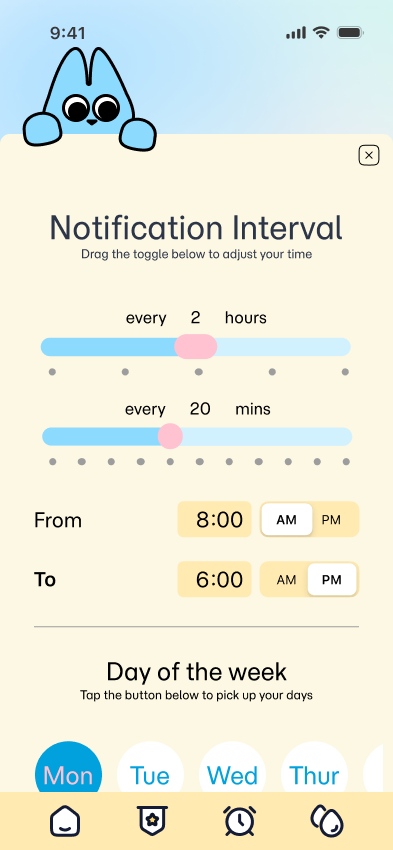
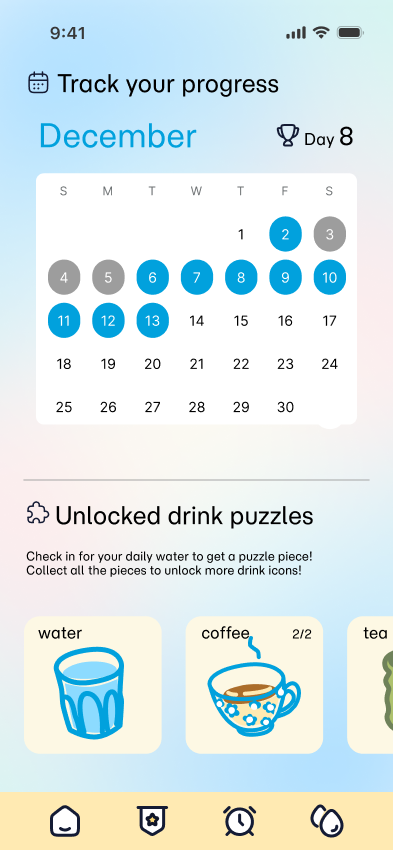

A habit-forming hydration companion designed to make water tracking engaging.


Most hydration apps fail for the same reason: logging water feels like a chore, and generic reminders get ignored until people give up on them entirely. Hydrated Cat set out to fix that by pairing a lightweight, one-tap tracking flow with a character-driven companion that reacts to a user's habits in real time. Turning a purely functional task into something people actually want to check in on.
I led the project end to end, from early user interviews through two rounds of usability testing to a finished, animated prototype. Along the way, three insights reshaped the product: reducing the friction of logging a drink, giving the Cat companion emotional feedback so hydration felt rewarding rather than transactional, and rebuilding onboarding around transparency once testers started hesitating to share personal data.
Two personas emerged from interviews and usability testing — click the card to switch between them.



Onboarding through daily logging in motion.
Cut logging to a single tap
on the home screen, after testing showed high interaction costs were driving users away.
Gave the Cat companion emotional feedback
"smiling on hydration" after users said the static version felt flat and transactional.
Rewrote onboarding around transparency
explaining upfront why biological data is needed, after testers hesitated to share it.
1. Beverage analysis
Track caffeine, sugar and alcohol alongside water for a fuller picture of health, not just hydration.
2. Social accountability
Add hydration buddies and leaderboards to turn motivation into positive social pressure.
3. Expanded rewards
Unlockable accessories and a richer incentive system to keep streaks interesting long-term.
See it in action.
View Prototype ↗